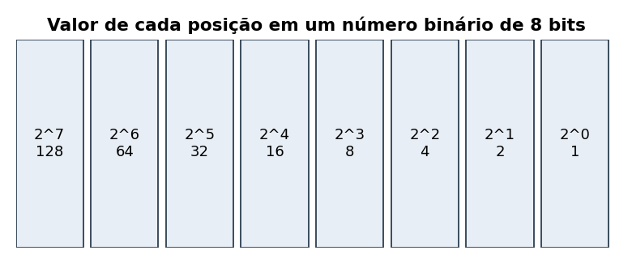
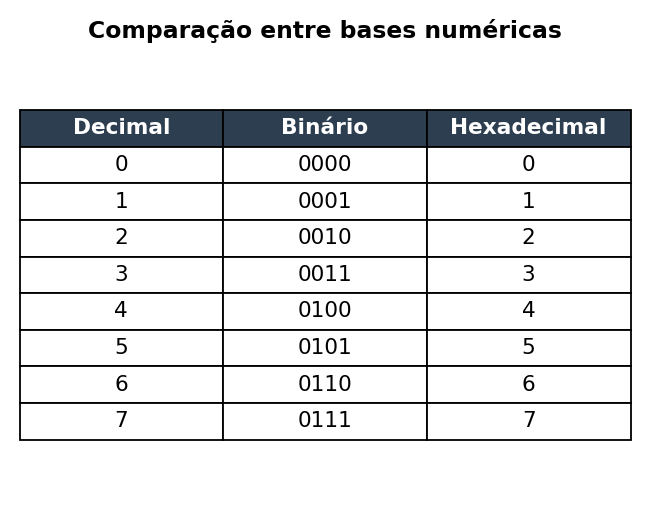

O que é um sistema de numeração?
Um sistema de numeração é uma forma de representar quantidades usando símbolos. No dia a dia usamos o sistema decimal, que tem 10 símbolos (0 a 9). Já os computadores trabalham internamente com o sistema binário, que tem apenas 2 símbolos (0 e 1), porque seus componentes eletrônicos só reconhecem dois estados: ligado e desligado.
Além do decimal e do binário, existem outras bases muito usadas na área de Computação, como o sistema octal (base 8) e o sistema hexadecimal (base 16). Cada uma delas tem uma utilidade diferente dependendo do contexto.
Sistema Binário
O sistema binário é a base de tudo o que um computador faz. Cada dígito binário é chamado de "bit" (binary digit) e pode valer 0 ou 1. Quando juntamos 8 bits, formamos um "byte", a unidade básica usada para medir a quantidade de informação armazenada em um computador.
Alguns pontos importantes sobre o sistema binário:
- Cada posição do número binário representa uma potência de 2
- O bit mais à direita é chamado de bit menos significativo
- O bit mais à esquerda é chamado de bit mais significativo
- É a linguagem "nativa" de qualquer computador

Sistema Hexadecimal
O sistema hexadecimal usa base 16, ou seja, 16 símbolos: de 0 a 9 e depois as letras de A a F (onde A vale 10 e F vale 15). Ele é muito usado na programação porque consegue representar um byte inteiro usando apenas dois dígitos, o que facilita a leitura de endereços de memória, cores em CSS (como #2c3e50) e códigos de erro.

Tabela de Conversão entre Bases
A tabela abaixo mostra a mesma quantidade representada em três bases numéricas diferentes: decimal, binário e hexadecimal.
| Decimal | Binário | Hexadecimal |
|---|---|---|
| 0 | 0000 | 0 |
| 1 | 0001 | 1 |
| 2 | 0010 | 2 |
| 3 | 0011 | 3 |
| 4 | 0100 | 4 |
| 5 | 0101 | 5 |
| 6 | 0110 | 6 |
| 7 | 0111 | 7 |
| 8 | 1000 | 8 |
| 9 | 1001 | 9 |
| 10 | 1010 | A |
| Tabela criada apenas para fins didáticos | ||
Formulário de Contato
Ficou com alguma dúvida sobre o conteúdo desta página? Preencha o formulário abaixo e entraremos em contato.
Vídeo Explicativo
Para reforçar o conteúdo estudado nesta página, assista ao vídeo abaixo, que explica os sistemas de numeração Decimal, Binário, Octal e Hexadecimal.